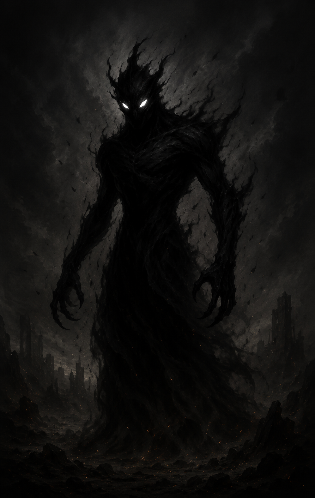
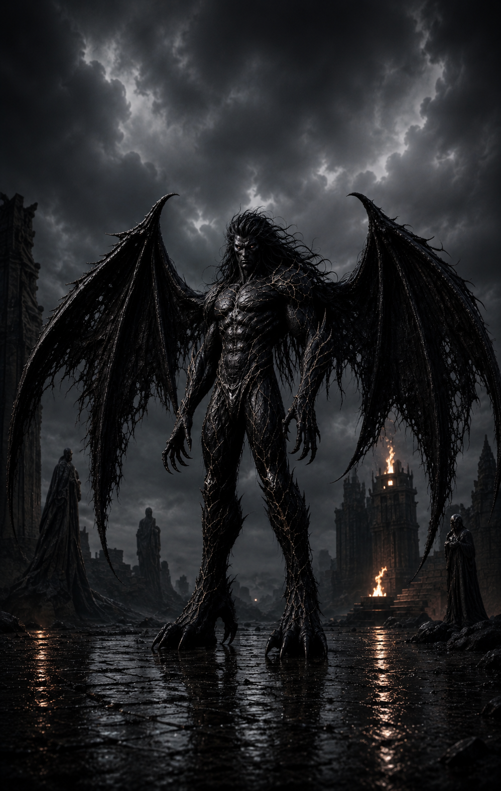
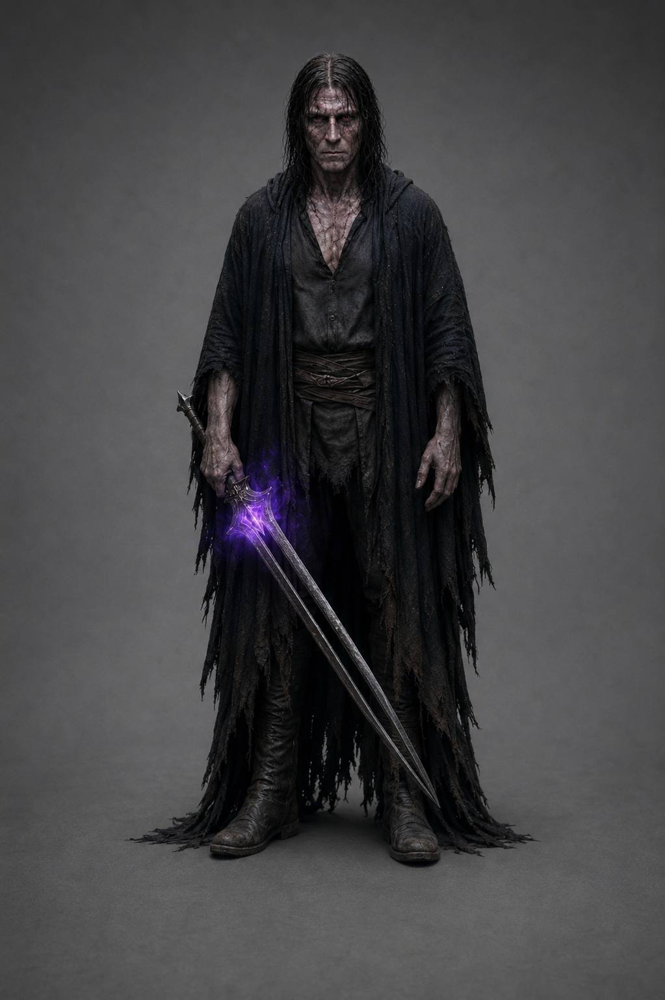
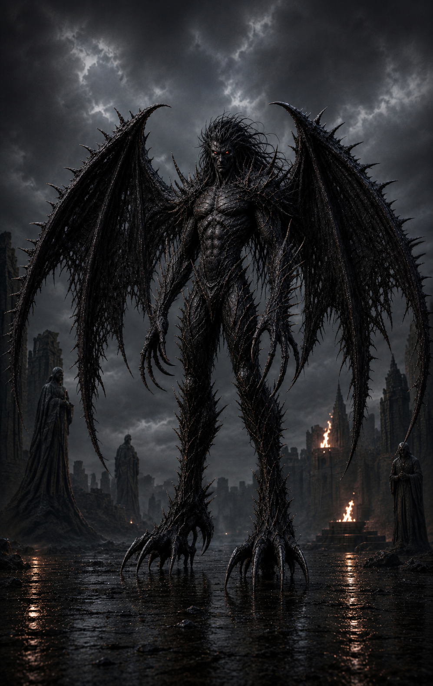

Дариус
Король докаинов

1 фаза

2 фаза

3 фаза

4 фаза
АРХИВНОЕ ДОСЬЕ № 01-D
Допуск: высший
[КОД: КОРОЛЬ]
Докаин
Объект: Дариус
Классификация: король докаинов
Степень наблюдения: критическая
Расширенная оценка:
Дариус является одним из первых докаинов, появившихся на территории Фраустера. Первоначально занимал должность главнокомандующего армии Харвоса и отвечал за формирование первых боевых отрядов своего народа.
После свержения Харвоса занял трон и стал новым королём докаинов. Под его властью разрозненные тёмные существа превратились в полноценную армию, способную захватывать крепости, вести затяжную войну и противостоять сильнейшим человеческим государствам.
Объект обладает выдающимися способностями стратега и способен быстро приспосабливаться к неизвестным противникам. В бою использует не только собственную силу, но и особенности каждого подчинённого ему докаина.
В ходе войны тело Дариуса неоднократно изменялось. Каждая новая фаза открывала ему способности, ранее недоступные представителям его народа. Одной из важнейших трансформаций стало обретение человеческого облика при полном сохранении силы докаина.
После последней трансформации объект принял имя Ригх Дэмхан Дариус.
Угроза:
Дариус представляет угрозу высшего уровня. Он способен самостоятельно уничтожать крупные отряды, создавать оружие из собственной энергии и продолжать сражение после ранений, смертельных для большинства известных существ.
Главная опасность заключается не только в его физической силе. Дариус является правителем, которому подчиняются тысячи докаинов. Любое принятое им решение способно изменить ход войны.
Эмоциональное состояние объекта напрямую влияет на его поведение. Потеря близких, ярость и страх за судьбу собственного народа способны привести к неконтролируемому усилению и очередной трансформации.
Особенности:
- Один из первых докаинов, появившихся в человеческом мире.
- Бывший главнокомандующий армии Харвоса.
- Сверг предыдущего правителя и стал королём докаинов.
- Обладает выдающимися способностями стратега и военачальника.
- Способен создавать новые разновидности докаинов.
- Может усиливать собственное тело путём поглощения живых существ.
- Связан с Нортой значительно сильнее, чем готов признать.
- После окончательного превращения получил имя Ригх Дэмхан Дариус.
Примечание наблюдателя:
Люди называли его чудовищем задолго до того, как он стал им.
Его народ называл его королём задолго до того, как понял цену его власти.
А сам Дариус хотел только одного — найти место, где докаинам больше не придётся сражаться за право жить.
Ради этого он отдал всё.
Включая самого себя.
Зафиксированные способности:
Первая фаза
- Трансформация конечностей.
- Создание клинков из собственного тела.
- Облачная форма.
- Полёт в форме тёмного облака.
- Повышенная физическая сила.
- Высокая скорость.
- Ускоренная регенерация.
- Управление тёмной энергией.
Вторая фаза
- Значительное усиление физического тела.
- Создание энергетического оружия.
- Создание защитных барьеров.
- Управление чёрным льдом.
- Создание ледяных копий.
- Усиленная регенерация.
- Поглощение живых существ.
Третья фаза
- Полное принятие человеческого облика.
- Сохранение силы докаина в человеческом теле.
- Сохранение ускоренной регенерации.
- Сохранение управления тёмной энергией.
- Создание оружия из собственной энергии.
- Повышенная физическая сила.
- Повышенная скорость и реакция.
Четвёртая фаза
- Форма Ригх Дэмхана.
- Предельное усиление физической силы.
- Предельное усиление скорости.
- Усиленное управление тёмной энергией.
- Стабильный полёт при помощи крыльев.
- Продолжение боя при критических повреждениях.
Последняя запись:
Если ты дочитал это досье до конца, значит хотел узнать, кем был этот докаин.
Но архивы умеют хранить лишь факты.
Остальное тебе придётся искать между строк.